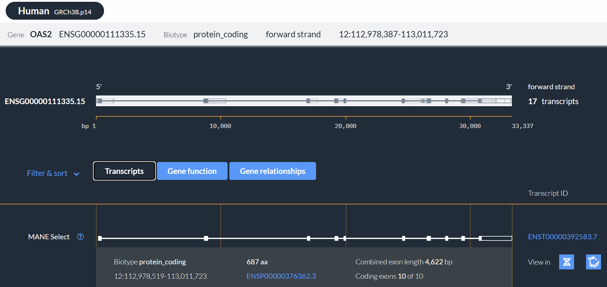
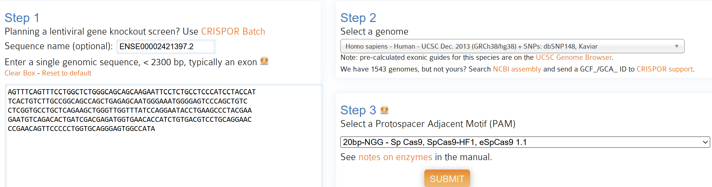
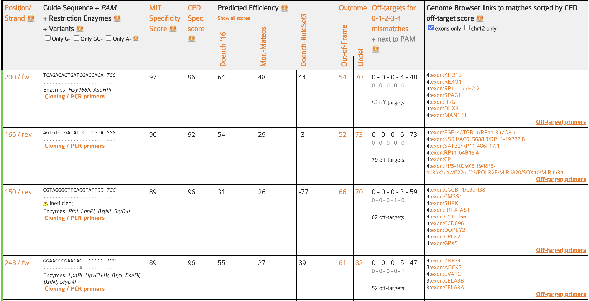

| Method | log2 Fold Change | Adjusted p-value / FDR |
|---|---|---|
| DESeq2 (Wald) | 9.9 | 9.69e-10 |
| edgeR (GLM-LRT) | 10.3 | 0.000169 |
3 Task 2: gRNA Design for OAS2
3.1 Objective
Building on the six consensus differentially expressed genes identified in Task 1 (Table 2.1), Task 2 selects a single biologically justified target gene, determines the appropriate transcriptional modulation strategy (CRISPRi vs. CRISPRa), extracts the canonical first exon sequence relative to gene transcription, and designs candidate SpCas9 single-guide RNAs (gRNAs) balancing on-target efficiency against off-target specificity.
3.2 Approach 1
Rationale for Selecting OAS2 Over the Other Five Consensus Genes
Rather than selecting a target solely by the largest numerical fold change, all six consensus genes from Task 1 (OAS2, GPRASP1, AC026801.2, IFI27, SERPINB2, and CXCL11) were evaluated against three criteria: protein-coding annotation, statistical robustness across both DE tools, and a direct mechanistic link to SARS-CoV-2 pathogenesis:
- Exclusion of
AC026801.2(Biotype):AC026801.2is a poorly characterised long non-coding RNA (lncRNA). Protein-coding genes with well-annotated transcription start sites (TSS) and established functional pathways are strongly preferred for therapeutic CRISPR modulation. - Exclusion of
GPRASP1(Zero baseline & pathway relevance):GPRASP1has zero read counts in bothmockcontrols (inflating its \(\log_2\text{FC}\)) and encodes a G-protein-coupled receptor sorting protein without a primary role in coronavirus replication or hyperinflammation. - Exclusion of
SERPINB2(Directionality and modest effect size):SERPINB2is the only downregulated gene (\(\log_2\text{FC} \approx -1.68\)), which would require CRISPR activation (CRISPRa), and exhibits the smallest absolute fold change among the six candidates. - Selection of
OAS2overIFI27andCXCL11: WhileOAS2,IFI27, andCXCL11are all upregulated interferon-stimulated genes, OAS2 (ENSG00000111335) combines an exceptionally strong, highly significant induction in both tools (Table 3.1) with a direct enzymatic role in the innate antiviral response. OAS2 encodes 2’-5’-oligoadenylate synthetase 2, which senses viral double-stranded RNA and synthesises 2’-5’-oligoadenylates to activate latent endoribonuclease RNase L (Merold et al. 2025). Crucially, sustained OAS2 overexpression in late-stage SARS-CoV-2 infection is implicated in pathological hyperinflammation, tissue damage, and COVID-19-associated cardiac dysfunction (Gao et al. 2023; Hernandez-Ramirez et al. 2026), making its controlled downregulation a biologically coherent test case for the project’s expression-restoration hypothesis.
Choice of CRISPR Modality: Why CRISPRi Instead of CRISPRa or Cas9 Nuclease
The overarching project hypothesis states that restoring deregulated gene expression in COVID-19 toward baseline levels will support patient recovery. Because OAS2 is strongly upregulated in the SARS condition (\(\log_2\text{FC} = 9.90\) in DESeq2, \(10.30\) in edgeR), CRISPR interference (CRISPRi) was selected over CRISPRa (which activates transcription of downregulated genes) and standard wild-type Cas9 nuclease cleavage (which causes permanent, irreversible DNA double-strand breaks and frameshift mutations). CRISPRi pairs a catalytically dead Cas9 (dCas9) with a transcriptional repressor domain such as KRAB to sterically block RNA polymerase II elongation and induce reversible heterochromatin silencing near the transcription start site (TSS) and first exon (Jensen et al. 2021).
Transcript, Strand Directionality, and First-Exon Extraction
Because eukaryotic genes often produce multiple alternatively spliced isoforms with different 5’ start sites, selecting an arbitrary transcript could target an exon that is spliced out in the primary physiological isoform. We therefore queried OAS2 in Ensembl (GRCh38.p14) and selected the MANE Select transcript (ENST00000392583.7) (Morales et al. 2022). MANE (Matched Annotation from NCBI and EMBL-EBI) defines the single, clinically standardised canonical transcript agreed upon by both RefSeq and Ensembl.

Paying strict attention to genomic directionality as required by the project specification, OAS2 is transcribed on the forward (+) strand of chromosome 12. Consequently, the first exon relative to the 5’ transcription start site is the most upstream exon (ENSE00002421397.2, out of 10 total exons), spanning chr12:112,978,519–112,978,785 (1-based, 267 bp) (Figure 3.2).

First exon FASTA sequence (
ENSE00002421397.2, 267 bp) submitted to CRISPOR
>ENSE00002421397.2 gene:ENSG00000111335.15 transcript:ENST00000392583.7 exon:1 total_exons:10
AGTTTCAGTTTCCTGGCTCTGGGCAGCAGCAAGAATTCCTCTGCCTCCCATCCTACCAT
TCACTGTCTTGCCGGCAGCCAGCTGAGAGCAATGGGAAATGGGGAGTCCCAGCTGTC
CTCGGTGCCTGCTCAGAAGCTGGGTTGGTTTATCCAGGAATACCTGAAGCCCTACGAA
GAATGTCAGACACTGATCGACGAGATGGTGAACACCATCTGTGACGTCCTGCAGGAAC
CCGAACAGTTCCCCCTGGTGCAGGGAGTGGCCATARationale for Selecting CRISPOR Over Other gRNA Design Tools
Multiple computational tools exist for CRISPR guide design, including CHOPCHOP, E-CRISP, SSC, and CRISPOR (Li et al. 2023; Cui et al. 2018; Concordet and Haeussler 2018). CRISPOR was specifically chosen over these alternatives for three reasons guided by both Task 2 and Task 3 requirements:
- Multi-model efficiency consensus vs. single-score tools: Unlike tools that report only a single activity metric, CRISPOR simultaneously computes orthogonal on-target efficiency models—including Doench 2016 (Rule Set 2), Moreno-Mateos, and RuleSet3—allowing cross-validation of predicted guide activity (Concordet and Haeussler 2018).
- Position- and nucleotide-aware off-target scoring (MIT and CFD): CRISPOR reports both the MIT specificity score and the Cutting Frequency Determination (CFD) score (Haeussler et al. 2016). Because CFD weights both the position and nucleotide identity of mismatches across the 20-nt protospacer and PAM, it provides a more biologically realistic measure of off-target dCas9 binding affinity than simple mismatch counting.
- Direct compatibility with Task 3 VCF screening: Crucially for Task 3, CRISPOR allows exporting the complete table of genome-wide off-target intervals (
offtargetsguide.txt) with exact 1-based GRCh38 coordinates, strand orientation, mismatch counts, and 23-bp sequences. Tools that only return summary off-target counts without genomic coordinates cannot be intersected with personal VCF files in Task 3.
The 267 bp OAS2 exon 1 sequence was analysed in CRISPOR using the Homo sapiens GRCh38/hg38 assembly, SpCas9 nuclease, canonical 20bp-NGG PAM setting (Figure 3.3).

3.3 Findings
Evaluation of Candidate gRNAs in OAS2 Exon 1
CRISPOR identified all candidate 20-nt protospacers adjacent to a canonical NGG PAM across both strands of OAS2 exon 1 (Figure 3.4).

To select the optimal guide pair, we applied a multi-tiered filtering strategy:
- Zero close-match off-targets (
0-0-0filter): Any guide with predicted off-target sites harbouring 0, 1, or 2 mismatches in the reference genome was immediately excluded, as SpCas9/dCas9 readily tolerates 1–2 mismatches. - High genome-wide specificity (\(\text{MIT} \ge 85\) and \(\text{CFD} \ge 95\)): Guides were required to achieve top-tier specificity across both scoring algorithms to minimise unintended transcriptional repression elsewhere in the genome.
- Complementary on-target efficiency across models: Because empirical efficiency algorithms weight sequence features differently, we selected two high-specificity guides—200forw (
200/fw) and 248forw (248/fw)—that excel across complementary efficiency predictors (Table 3.2).
| Guide | Exon 1 Pos | GRCh38 Coordinates (23 bp) | 20-base Protospacer | PAM | MIT Spec. | CFD Spec. | Doench 2016 | Moreno-Mateos | RuleSet3 | Off-Targets (0-1-2-3-4 mm) |
|---|---|---|---|---|---|---|---|---|---|---|
| 200forw | 200 / + | chr12:112,978,698–112,978,720 | TCAGACACTGATCGACGAGA | TGG | 97 | 96 | 64 | 48 | 44 | 52 (0-0-0-4-48) |
| 248forw | 248 / + | chr12:112,978,746–112,978,768 | GGAACCCGAACAGTTCCCCC | TGG | 89 | 96 | 55 | 27 | 89 | 52 (0-0-0-5-47) |
Justification of 200forw and 248forw Over Alternative Exon 1 Guides
Comparing 200forw and 248forw against each other and against rejected candidates in Figure 3.4 demonstrates why retaining this pair is optimal:
- Strengths of
200forw: Achieves the highest overall MIT specificity score (97) and CFD score (96), alongside strong Doench 2016 (64) and Moreno-Mateos (48) efficiency predictions. Its 52 predicted off-target sites consist of zero 0-, 1-, or 2-mismatch sites, only 4 three-mismatch sites, and 48 four-mismatch sites (0-0-0-4-48). - Strengths of
248forw: Matches 200forw in CFD specificity (96) and total off-target count (52, distributed as0-0-0-5-47), while achieving an outstanding RuleSet3 efficiency score (89) and solid Doench 2016 score (55). - Why other Exon 1 candidates were rejected: Alternative guides visible in Figure 3.4 are inferior on either specificity or efficiency. For example,
166/revhas lower specificity (MIT 90, CFD 92) and 50% more off-target sites (79 vs. 52), while150/revis flagged by CRISPOR as"Inefficient"with a strongly negative RuleSet3 score (-77 vs. 89) and low Doench 2016 score (31).
3.4 Discussion & Conclusion
Selecting 200forw and 248forw provides a well-balanced pair of forward-strand gRNAs targeting the canonical first exon of OAS2 (chr12:112,978,698–112,978,720 and chr12:112,978,746–112,978,768). Both guides use a canonical TGG PAM, avoid any 0–2 mismatch off-targets in GRCh38, and hedge against single-model bias by combining top-ranked MIT/Doench metrics (200forw) with top-ranked RuleSet3/CFD metrics (248forw).
Two biological caveats apply to these computational predictions. First, CRISPOR’s efficiency scores (Doench 2016, Moreno-Mateos, RuleSet3) were trained primarily on Cas9 knockout cleavage datasets rather than dCas9-KRAB transcriptional repression; while sequence features governing Cas9 ribonucleoprotein assembly and DNA unwinding are shared, steric positioning relative to the TSS also influences CRISPRi efficacy (Jensen et al. 2021; Haeussler et al. 2016). Second, all scores in Task 2 are computed solely against the GRCh38 reference genome. Human genetic polymorphisms can alter on-target availability on chromosome 12 or modify off-target binding risk on other chromosomes. Both 200forw and 248forw, together with their exported CRISPOR off-target coordinates (offtargetsguide.txt), are therefore carried forward to Task 3 for personal genome evaluation across the seven 1000 Genomes individuals.
GenAI Usage & Validation: Google Gemini 4 (Argon) was used to structure and streamline the scientific phrasing of the gRNA design rationale and format the
knitr::kablesummary tables. Target selection (OAS2), Ensembl MANE Select first-exon extraction (ENST00000392583.7), CRISPOR execution, and candidate filtering (200forwand248forw) were conducted manually by the team. All AI-refined text and table values were verified directly against Ensembl GRCh38.p14 coordinates and raw CRISPOR outputs (offtargetsguide.txt). See the AI Use Declaration for full details.↩︎